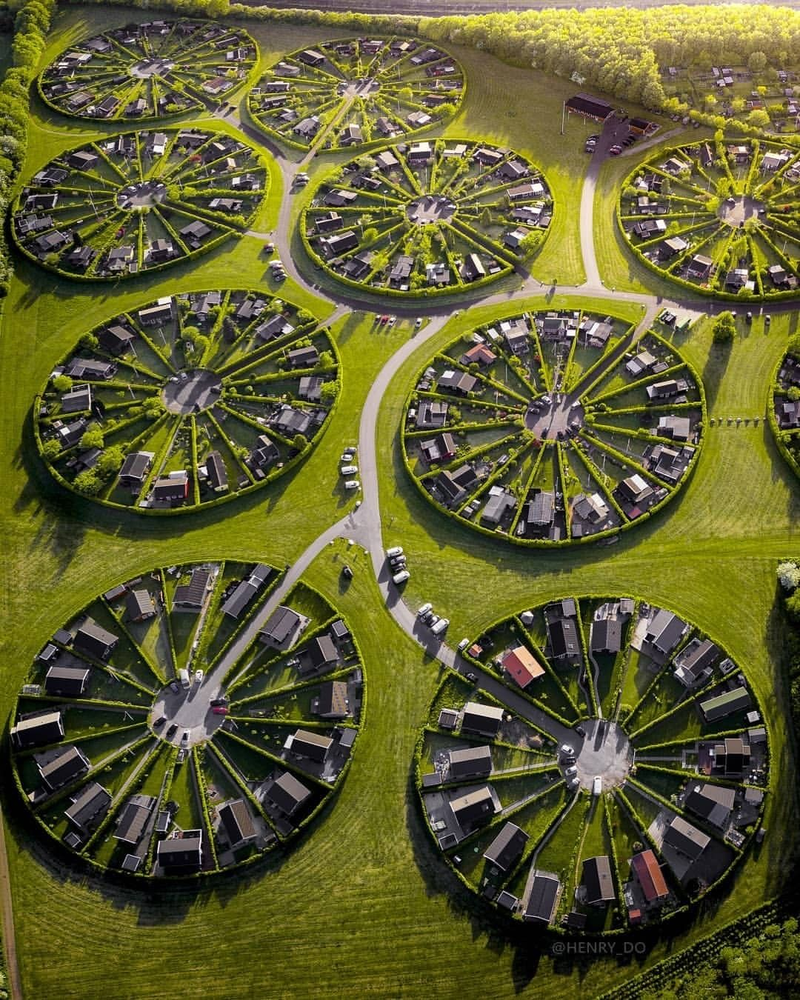

זה לא נוצר עם AI - זאת שכונה אמיתית! 🏘️
פורסם במקור ב LinkedIn
זה לא נוצר עם AI - זאת שכונה אמיתית! 🏘️
אי שם בדנמרק, בשנות ה-60, נולד רעיון מהפכני: מה אם נוכל לחבר אנשים מחדש לטבע, ולעצב שכונה שתשים את הקהילה והאדמה במרכז?
כך נולדה Brøndby Haveby, או "עיר הגנים".
למה דווקא מעגלים? העיצוב המעגלי הוא לא מקרי -
הרעיון מאחורי המבנה הזה הוא לטפח תחושת קהילה חזקה, כאשר כל בית "פונה" למרכז המעגל, אין גבולות נפרדים בין השכנים מלבד הצמחיה.
המרכז של כל מעגל כולל גינת ירק משותפת שבה התושבים מגדלים יחד פירות ירקות וצמחים - פעילות שמטפחת את שיתופי הפעולה והקשרים החברתיים. 🥕 🍅
על פי המתכנן, המבנה המעגלי מקנה יתרונות פונקציונליים:
✅ חיסכון במקום – העיצוב מאפשר לנצל בצורה יעילה יותר את השטח.
✅ חיבור לטבע – הגינות מספקות שטח ירוק משמעותי לכל משפחה.
✅ שקט ופרטיות – בניגוד לרחובות פתוחים, המבנה "מגן" על השכונה מרעשי הסביבה.
מי גר שם?
השכונה מיועדת בעיקר לדיירים מקומיים – מי שגרו ברדיוס של 20 ק"מ מהאזור.
הבתים עצמם קטנים, עד 50 מ"ר, ומשמשים בעיקר כמקום מפלט מהעיר.
מדובר באנשים שאוהבים גינון וטבע, והם מגיעים מכל קשת המקצועות.
השכונה מנוהלת כפרויקט של "גינות קהילתיות" (Allotment Gardens), שהן חלק מהתרבות הדנית.
החוקים הדנים לא מאפשרים לתושבים לרכוש את הקרקע - היא מושכרת להם בעלות חודשית נמוכה (כ-130 אירו לחודש) מה שמאפשר גישה לאנשים מכל מעמד כלכלי.
מאז שנות ה-60 שכונת Brøndby Haveby נחשבת להצלחה מסחררת:
✅ קהילתיות אמיתית – המבנה המעגלי והעבודה המשותפת בגינות יוצרים קשרים חברתיים חזקים.
✅ בריאות ואיכות חיים – חיבור לטבע ושקט משפרים את הרווחה הנפשית.
✅ תכנון עירוני ירוק – המודל מהווה דוגמה לאיזון בין קהילה, פרטיות וטבע.
בעידן שבו הערים שלנו הופכות לצפופות ולמנוכרות, המודל של Brøndby Haveby מזכיר שאפשר אחרת - תכנון עירוני יצירתי, שמעמיד במרכזו את האדם והסביבה, יכול לשנות חיים.
ומה איתנו?
גם בישראל יש מקום שמזכיר את Brøndby Haveby – מושב נהלל בעמק יזרעאל, שהוקם בשנת 1921 (תפתחו את המפות של גוגל ותראו!).
נהלל תוכננה בצורת מעגל מתוך חזון ברור: ליצור קהילה שוויונית שבה לכל משק יהיה מרחק שווה מהמרכז, וכל חלקה תהיה בגודל זהה.
הטבעת החיצונית הוקדשה לחלקות החקלאיות, הטבעת הפנימית לבתי התושבים, ובמרכז המעגל נבנו מוסדות הציבור.
העיצוב הזה לא רק ענה על צרכים ביטחוניים ומעשיים, אלא גם ביטא רעיון עמוק של שיתוף, שוויון וקשר בין הקהילה לשטחי העבודה שלה
הדשא של השכן (הדני) ירוק יותר -
הייתם רוצים לגור במקום כזה, שבו הטבע והקהילה הם חלק מחיי היומיום? או שאתם טיפוס עירוני של בית קפה במרחק הליכה וסופר מעבר לכביש?
📸 קרדיט צילום: Henry Do
